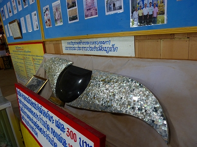

泰国珍寺修行、ついに南部のプーケットに到着したよ。
日本人のみならず世界中の人が訪れるタイでも屈指のリゾート観光地。
一説ではタイで最も物価と県民所得が高いとか。
島でも最も賑やかなパトンビーチには冗談かと思うような派手なバーが軒を連ねており、墨入れまくりの2メートル150キロ級の国籍不明ファラン（白人）が昼真っからビールをグビグビ呑んでハイテンションで騒ぎまくり。
こいつら絶対海とか行かないんだろうなあ。
さて、そんな楽しげなバー&海鮮料理&ビーチ&マッサージ&かわいこちゃん&コピーソフト&偽ブランド品&違法VCDなどなど煩悩楽園にはキッパリ背を向けて修行中の身である私は世界屈指の大仏を拝せねばならぬのであ～る。
でもね
「アンタ、真面目だねー」とか言わないで下さい。
これは煩悩を断ち切るとか、そういった類のものではなくて大仏を見ること自体が私にとっての最大の快楽＝煩悩なのですよ。
なので昼真っから路上でラリってぶっ倒れてるファランと何の差もないのですよ。煩悩に忠実、という意味では。
そしてファランのみなさんも私も同じ感想を持つのです「タイ最高ー！」と。
てなわけで大仏さんにご挨拶である。
タクシーより安かったのでバイタク（バイクの後部座席に乗るタクシーね）を利用。「Yes! Big Buddha！I know I know…すぐソコ、すぐソコ…」ところがこれが大後悔。
大仏さんは山の頂上にあり、ウネウネとした山道を振り落とされそうになりながら登っていくのであった。
遠くの山頂に大仏が見えてきたときは感動よりも「ええ！まだあんなに遠いの！」と思ったほど。すぐソコすぐソコって何よ…。
で、やっと近づいて参りました。
山頂に立つ自称世界最大の大仏。
最後の方は上り坂がきつくなってきて、バイタクの運ちゃんの表情にも疲労の色が…
多分、次からは「…すぐソコ、すぐソコ…」とは言わないと思う。結構大変そうだったもの。
山道を進んでいくと、突然視界に巨大な仏陀が飛び込んでくる。
でかっ！この瞬間が大仏鑑賞における最大のドーパミン放出タイムである。
強い酒や悪い薬にも勝るとも劣らぬ脳内物質がチョロチョロチョロ…しばし痙攣&ちょっと尿漏れ。
大仏さんはまだ建設中であった。
像自体はほぼ完成しているが頭部に足場が組まれている。
台座の部分はまだまだですね。
大仏さんの前には完成予想写真が。
おお、何だかお誕生日のケーキみたいじゃないか！
細長いヒョロっとした顔立ちが多いタイでは珍しくアンコ型。
高さは45メートル。
アントンの大仏の方が全然大きいような気がするなあ…
見れば大仏さんの頭に人が登っているようだ。
うはー。怖そー。
建設中なれど拝観は可能なので、お参りしにいく。
トタン屋根の仮堂というか倉庫のようなところがお参りポイントとなる。
かなりいい加減な完成模型に苦笑い。
その一画には大仏制作プロセスの説明などがあった。
↑大仏頭部の原型に縦横のラインを引く。
↑そのアウトラインと同じカタチの線を板にトレース。
↑で、それに合わせて輪郭の横ラインを鉄筋で組んでいく。
ええと確か数Ⅲってこういうときに役に立つんでしたっけ？
↑で、縦ラインも組んでいくと顔の籠細工のような按配になる。
↑さらに表面に下地を施し、上塗りをすると大仏さんの御尊顔が出来上がる、というわけ。
これが大仏制作の基本ラインである。
実際に取り付けられるパーツの展示も。
螺髪、つまり大仏さんの髪の毛である。自称世界最大の大仏だけにパーマの際のロッドの太さも極太ですな。
大理石が貼り付けられている。
こちらは目。

螺鈿ですね。切れ長ですね。
んで世界中の大仏フレンドが大仏をバックに記念撮影、の図。
近隣のASEANや東アジア諸国は勿論、場所柄ヨーロッパの訪問者も多い。中東はトルコだけでした。
んで、お願いプレート。
何かこういう時に書く内容って世界共通ですね。当たり障りない感じで。
「娘にとり憑いている悪い自縛霊が隣の家の嫁ッコに憑きますように」
…などといった具体的かつ濃過ぎる内容のお願いは別のところで処理するみたいですよ。
素敵な完成予想図入りポスター。
で、高台の上にある大仏さんに向かおうではないか。
階段にはショボイながらも日よけ付きの親切設計。
で、階段を上りきると眼前に白亜の大仏さんが！ここでも改めてチョロチョロチョロ…
全身をタイル状の白い大理石で覆われている。眩しいまでに真っ白だ。
"Put The Eyes In December"とある。そうかそうか目が取り付けられたばっかりなのか。
作業員の方々がロープ伝いに登っていく。まさにガリバーの世界。
大仏さんの右手には大量の鐘がぶら下がった木がある。
プレイングベルというのだろうか。東南アジアではよく見かける。
足元を見ると台座の部分はまだまだ工事中。
台座に使用される蓮の花びらも取り付け前。フロムミャンマーの大理石が眩しい。
傍らにあった仏像。
これだって充分でかいんですけど。
頭上の天使の輪的な相輪を支えるためだけに鉄塔を建てる、これもタイでたまに見かける風景だ。
台座の部分は物置のような状態になっている。んでそこにあった各種模型。
あ、これはさっきのお誕生日ケーキ的な模型じゃないか。
大仏さんの背後に回ってみる。
こちらはさらに工事中ゾーン。
先ほどのお誕生日ケーキを見てお判りいただけると思うが、この大仏がおわす高台自体を須弥山のようなひとつの巨大構造物として作り上げようとしている。最早大仏建立どころかパラダイス建設、という壮大な事業になっているのだ。
で、その背中。お尻の部分が胎内空間への入り口になっている。
門の左右にはこれまた巨大な仏像が立っている。日本で言えば仁王サマのようなものだろうか。
顔に覆いがしてあるのは開眼前だからなのだろう。
で、その内部。
想像はしていたが、中はほとんど手すかず。床がビチャビチャと濡れていた。
見上げれば柱と梁が交差する荘厳なラーメン構造の空間。
こうして見ていると、鉄筋コンクリート造の大型大仏という存在は表層的には反構造主義的な存在ではあるが、その根幹はあくまでも近代建築そのものなのだ、ということを嫌が上にも思い知らされる。
でかいなあ。大理石のパネル何枚使ってるんだろう。
影がこんなですもん。
遠くには真っ青な海が広がっていた。明日は泳ぐか。


泰国珍寺修行 南へ
珍寺大道場 HOME